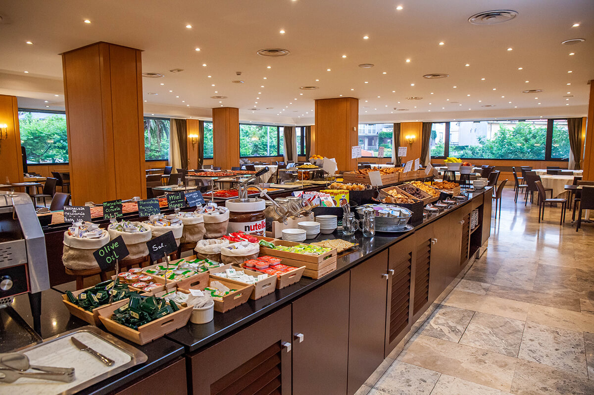
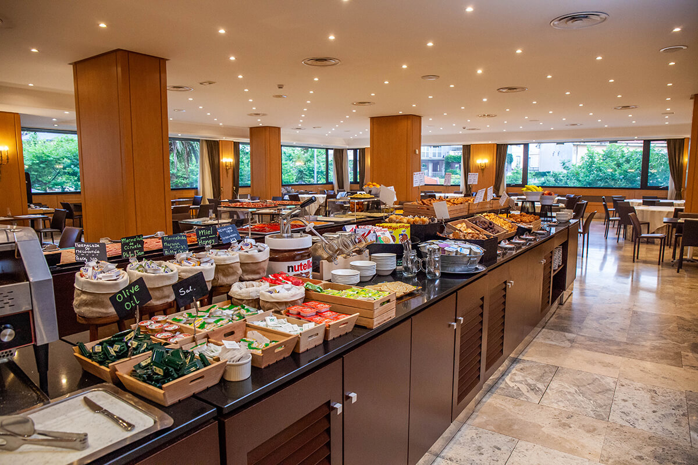

Lugares De Santander
Mira Varios Lugares de Santander.
Bahía de Santander
La Bahía de Santander, situada en la costa norte de España, es uno de los estuarios naturales más bellos y grandes del país. Con unos 22,5 kilómetros cuadrados de superficie, está rodeada por la ciudad de Santander, la capital de Cantabria, y otras localidades cercanas. La bahía se caracteriza por su forma semicircular, y es un importante puerto natural que ha jugado un papel clave en la historia comercial y naval de la región.
Centro Botín
El Centro Botín es un centro de arte y cultura en Santander, Cantabria, que se ha convertido en un símbolo contemporáneo de la ciudad. Inaugurado en 2017, el edificio fue diseñado por el renombrado arquitecto italiano Renzo Piano, conocido por su enfoque innovador y su capacidad para integrar estructuras en su entorno natural. El Centro Botín está situado en el muelle de Albareda, a orillas de la bahía de Santander, y está compuesto por dos volúmenes elevados que parecen flotar sobre el agua, conectados por una pasarela. Su diseño aprovecha al máximo la luz natural y ofrece impresionantes vistas del mar y la ciudad.
Museo Marítimo del Cantábrico
El Museo Marítimo del Cantábrico es uno de los museos más emblemáticos de Santander, dedicado a la rica historia y cultura marítima de la región cantábrica. Inaugurado en su ubicación actual en 1981, el museo está situado a orillas de la bahía de Santander, lo que refuerza su conexión directa con el mar y la tradición marinera de Cantabria. Este museo ofrece una inmersión completa en el mundo marino, con una extensa colección que abarca desde la biología marina hasta la historia naval y la pesca tradicional.
Península de la Magdalena
La Península de la Magdalena es uno de los lugares más icónicos y visitados de Santander, Cantabria. Ubicada en la entrada de la bahía de Santander, esta península es un espacio natural que combina paisajes impresionantes, historia, y ocio en un entorno privilegiado. La península es famosa por albergar el Palacio de la Magdalena, una majestuosa residencia construida entre 1909 y 1911 para la familia real española. El palacio, de estilo ecléctico, combina elementos neoclásicos y montañeses, y se encuentra en lo alto de una colina, desde donde se tienen vistas espectaculares del mar Cantábrico y de la ciudad de Santander.
Hoteles en Santander
Disfruta tu Estancia en los Mejores Hoteles.
Hotel bahía Santander
El Hotel Bahía en Santander es un hotel de cuatro estrellas ubicado en el centro de la ciudad, cerca de la bahía y el puerto. Es conocido por sus vistas panorámicas al mar, su cercanía a lugares emblemáticos como la Catedral de Santander y su elegante estilo clásico. Ofrece habitaciones modernas, restaurante, bar y salas de eventos, siendo una opción popular tanto para turistas como para viajeros de negocios.
Hotel Santemar
El Hotel Santemar es un hotel de cuatro estrellas situado en Santander, cerca de la famosa playa del Sardinero. Es el hotel más grande de la ciudad y ofrece una combinación de confort moderno y elegancia clásica. Cuenta con amplias habitaciones, un restaurante que sirve cocina local e internacional, un bar, y varias salas de eventos y reuniones. Su ubicación lo hace ideal para disfrutar de la playa y explorar las principales atracciones de Santander.

 

Hotel Sardinero
El Hotel Sardinero es un elegante hotel ubicado en Santander, España, frente a la famosa playa del Sardinero. Este hotel combina la belleza clásica de un edificio histórico con comodidades modernas, ofreciendo habitaciones confortables con vistas al mar o a la ciudad. Es conocido por su excelente ubicación, cercana a atracciones turísticas como el Palacio de la Magdalena, y por su servicio de alta calidad. Es ideal tanto para turistas como para viajeros de negocios, proporcionando un ambiente relajante junto al mar Cantábrico.
Hotel Real
El Hotel Real es un icónico y lujoso hotel de cinco estrellas situado en Santander, España. Inaugurado en 1917, es un edificio histórico con vistas panorámicas a la bahía de Santander y al mar Cantábrico. El hotel es conocido por su arquitectura clásica, su ambiente elegante y sus amplias habitaciones, muchas de las cuales ofrecen impresionantes vistas al mar. Además, cuenta con un prestigioso restaurante, un spa y jardines que realzan la experiencia de lujo. Su ubicación privilegiada y su historia lo convierten en un símbolo de la ciudad y en un destino popular para visitantes que buscan una estancia de alta categoría.